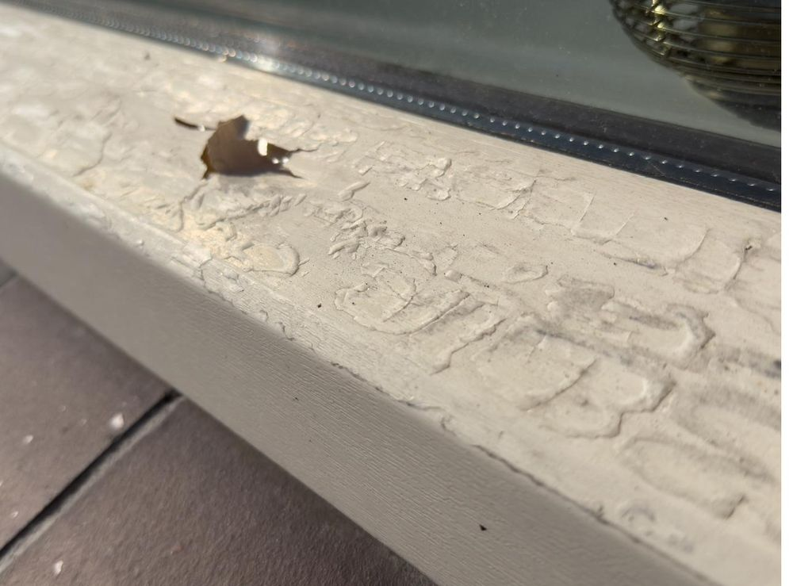

Twee heel verschillende vragen, met elk hun eigen aanpak en specialisten. Kies hieronder wat bij jouw situatie past.
Leer hier alles over kozijnherstel en kozijnwrappen, voordat je kiest

Voor kunststof kozijnen waarvan de Renolit folie loslaat, verkleurt of beschadigd is. Het kozijn zelf is nog goed — alleen de toplaag is aan vervanging toe.
Bekijk kozijnherstel →Voor aluminium én kunststof kozijnen die technisch prima in orde zijn, maar een andere uitstraling of kleur mogen krijgen.
Bekijk kozijnwrappen →de folie loslaat, verkleurd of dof is, er krassen of schade zichtbaar zijn, of het kozijn er verouderd uitziet.
het kozijn technisch en visueel nog helemaal in orde is, en je puur voor een andere kleur of stijl kiest.